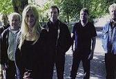

Celtic Lyrics Corner > Artists & Groups > Altan
|  | Altan |
| Members : | Dermot Byrne, Ciarán Curran, Mark Kelly, Mairéad Ní Mhaonaigh, Dáithí Sproule & Ciarán Tourish |
| Albums : |
1983 -
Ceol Aduaidh
1987 - Altan 1989 - Horse With A Heart 1990 - The Red Crow 1992 - Harvest Storm 1993 - Island Angel 1996 - Blackwater 1997 - The Best Of Altan 1997 - Runaway Sunday 2000 - Another Sky 2002 - The Blue Idol 2005 - Local Ground |
| Also On : | Cliar's album Grinn Grinn |